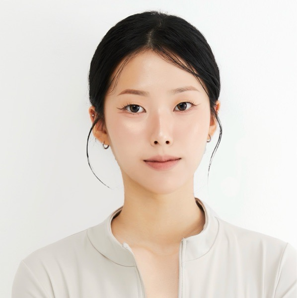

관심 분야
- 스포츠 머천다이징
- 스포츠 마케팅
- 스포츠 제품 기획
- 스포츠 콘텐츠
- 사용자 경험
나무보단 숲을 보는 사람
스포츠를 직접 경험하고, 사람과 데이터를 이해하며
스포츠 제품과 콘텐츠를 새로운 관점에서 바라봅니다.

저는 스포츠를 단순히 운동으로만 바라보지 않습니다.
운동 지도 경험을 통해 사용자를 직접 이해하고, 연구 활동을 통해 데이터를 분석하며, 공모전과 동아리 활동을 통해 제품과 콘텐츠를 기획하고 디자인해왔습니다.
또한 스포츠 제품 피팅과 국제 스포츠 대회 현장을 경험하며 스포츠 산업이 실제로 어떻게 운영되고 소비자에게 전달되는지 경험했습니다.
이러한 경험을 바탕으로 사람이 원하는 스포츠 제품과 경험을 발견하고 기획하는 것에 관심이 있습니다.
스포츠 머천다이징
스포츠에 대한 이해와 다양한 현장 경험을 바탕으로 소비자가 원하는 스포츠 제품과 경험을 기획하는 사람을 목표로 합니다.
스포츠 전공과 운동 지도 경험을 바탕으로 스포츠 현장과 소비자의 관점에서 생각할 수 있습니다.
회원의 신체 상태와 운동 데이터를 분석하고 개인에게 맞는 프로그램을 구성한 경험이 있습니다.
공모전과 동아리 활동을 통해 아이디어 기획부터 콘텐츠 및 디자인 제작까지 경험했습니다.
다양한 연령대의 사람을 대상으로 운동 및 체력 관련 내용을 설명하고 실습을 진행한 경험이 있습니다.
운동·데이터·디자인·마케팅을 개별적인 경험으로 보지 않고 하나의 관점으로 연결합니다.
운동을 가르치는 사람에서
스포츠를 기획하는 사람으로
처음에는 스포츠를 직접 경험하고 가르치는 것에서 시작했습니다.
필라테스 강사와 연구 활동을 통해 사람의 몸과 행동을 관찰하고 데이터를 기록하는 경험을 쌓았습니다.
또한 서경대학교 구독대학교에서 예비시니어를 대상으로 체력평가를 발표하고 직접 실습을 진행하면서, 전문적인 내용을 사람의 눈높이에 맞춰 전달하는 경험도 쌓았습니다.
이후 스포츠 동아리와 공모전 활동을 통해 스포츠를 제품과 콘텐츠, 마케팅의 관점에서 바라보기 시작했습니다.
충청 유니버시아드 굿즈 디자인 공모전과 캡스톤디자인을 통해 스포츠와 제품을 연결하는 경험을 했고,
SPARK 활동을 통해 스포츠 마케팅과 산업 트렌드를 공부했으며,
프로스펙스 피팅모델 활동을 통해 스포츠 제품이 실제 사용자에게 어떻게 경험되는지 직접 경험하고 있습니다.
이러한 경험을 바탕으로 앞으로는
스포츠를 잘 아는 사람을 넘어,
사람들이 원하는 스포츠 제품과 경험을 기획하는 사람
이 되고자 합니다.